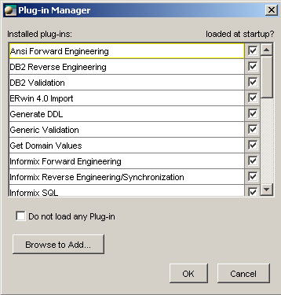

Plug-ins
Built-in plug-ins
ModelSphere comes with about more than thirty built-in plug-ins.
They are usually related to forward and reverse engineering of specific target systems.
Because they are loaded independently of the application, they can evolve independently of the application.
For instance, it's possible to provide and install an updated version of a given plug-in
(for a new release of a target system, for instance) without having to re-install ModelSphere completely.
To see the list of all plug-ins, click the Plug-ins... item under the Help menu.
For each plug-in, the plug-in name, its revision date, its author and its entry point class are displayed.
The Plug-in Manager
The plug-in manager allows ModelSphere to load or not to load any plug-in.
Therefore, it is possible to disable plug-ins not used by the user.
To open the plug-in manager, click the Plug-in Manager... item under the Help menu.

Adding a new Plug-in
The plug-in manager also allows to add a user-defined plug-in into ModelSphere.
Press the Browse to Add... button and choose the plug-in entry point (a .class file).
Try the examples provided with the application (choose the Example1.class file under the example\plugins\classes directory).
Note that the new selected plug-in does not appear immediately in the list,
but it will the next time the plug-in manager is invoked.
The modelsphere.plugins file
The list displayed by the plug-in manager comes from the modelsphere.plugins file.
It's possible to edit this text file in order to manually enable/disable a given plug-in,
or to add another one (although it is recommended to use the plug-in manager to do so).
It's also possible to permanently delete a plug-in entry in the list of plug-ins by editing.
User-defined plug-ins
Users can develop their own plug-in in Java (See the examples provided with the application discussed earlier).